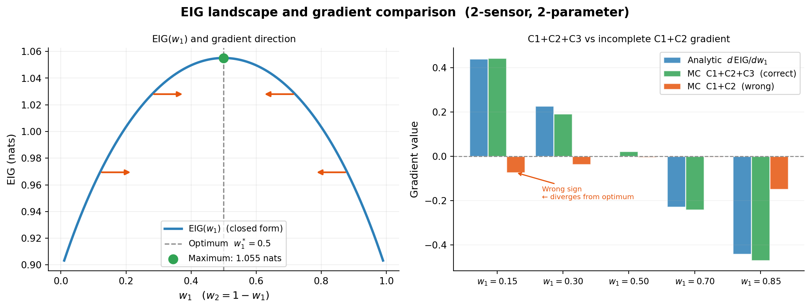

Bayesian OED: Gradients and the Reparameterization Trick
PyApprox Tutorial Library
Why observations depend on design weights, how the reparameterization trick produces the correct C1+C2+C3 gradient, and what the corrected Hessian looks like.
TipDownload Notebook
Learning Objectives
After completing this tutorial, you will be able to:
- Explain why \(\partial\mathbf{y}^{(m)}/\partial w_k \neq 0\) in the EIG estimator
- Derive all three gradient components (C1, C2, C3) from first principles
- Identify when C3 is present and when it vanishes
- State the corrected Hessian-vector product formula and explain why the earlier zero-Hessian claim was incorrect
Prerequisites
Complete The Double-Loop Estimator before this tutorial.
The Core Problem
We want to maximise EIG with respect to \(\mathbf{w}\) using gradient-based optimisation. The gradient is:
\[ \nabla_{\mathbf{w}} \widehat{\text{EIG}} = \frac{1}{M}\sum_{m=1}^{M} \Bigl[ \nabla_\mathbf{w}\log p(\mathbf{y}^{(m)} \mid \boldsymbol{\theta}^{(m)}, \mathbf{w}) - \nabla_\mathbf{w}\log\hat{p}(\mathbf{y}^{(m)} \mid \mathbf{w}) \Bigr]. \]
Both terms require differentiating \(\log p(\mathbf{y}\mid\boldsymbol{\theta},\mathbf{w})\) with respect to \(\mathbf{w}\). The subtlety is that \(\mathbf{y}^{(m)}\) itself depends on \(\mathbf{w}\) through the outer sampling path.
Important\(\mathbf{y}\) depends on \(\mathbf{w}\) — this changes the gradient
The outer observation is generated as:
\[ \mathbf{y}^{(m)}(\mathbf{w}) = \mathbf{f}(\boldsymbol{\theta}^{(m)}) + \mathbf{W}^{-1/2}\boldsymbol{\Gamma}^{1/2}\boldsymbol{\varepsilon}^{(m)}, \]
so \(\partial y_k^{(m)}/\partial w_k \neq 0\). Differentiating the integrand while treating \(\mathbf{y}^{(m)}\) as fixed — i.e., ignoring this dependence — produces a biased gradient that can have the wrong sign away from the optimum, pointing the optimiser away from the maximum. The reparameterization trick fixes this by holding \(\boldsymbol{\varepsilon}^{(m)}\) fixed and propagating \(\nabla_\mathbf{w}\) through the sampling path.
Gradient of the Log-Likelihood
For diagonal noise \(\boldsymbol{\Gamma} = \mathrm{Diag}[\boldsymbol{\gamma}]\), the per-sensor log-likelihood is:
\[ \log p(\mathbf{y}\mid\boldsymbol{\theta},\mathbf{w}) = \sum_{k=1}^{K} \underbrace{-\tfrac{w_k}{2\gamma_k}\,r_k^2}_{\ell_1^{(k)}} + \underbrace{\tfrac{1}{2}\log(w_k/\gamma_k)}_{\ell_2^{(k)}} - \tfrac{1}{2}\log 2\pi. \]
where \(r_k = y_k - h_k(\boldsymbol{\theta})\).
Components C1 and C2 — Treating \(r_k\) as Fixed
Differentiating \(\ell_1^{(k)}\) and \(\ell_2^{(k)}\) with respect to \(w_k\), treating \(r_k\) as a constant:
\[ \underbrace{\frac{\partial \ell_1^{(k)}}{\partial w_k} = -\frac{r_k^2}{2\gamma_k}}_{\text{C1: quadratic precision}}, \qquad \underbrace{\frac{\partial \ell_2^{(k)}}{\partial w_k} = \frac{1}{2w_k}}_{\text{C2: log-determinant}}. \]
In matrix form over all \(K\) sensors and \(M\) outer samples:
\[ [\nabla_\mathbf{w}\ell]^{\text{C1+C2}} = -\tfrac{1}{2}\bigl(\mathrm{Diag}[\boldsymbol{\gamma}]^{-1} \circ \mathbf{R}^2\bigr)^\top + \tfrac{1}{2\mathbf{w}}, \]
where \(\circ\) is elementwise multiplication and \(\mathbf{R}\) is the \(K \times M\) residual matrix. This formula is incomplete when \(\mathbf{y}\) is generated from the \(\mathbf{w}\)-dependent model.
Component C3 — The Reparameterization Chain Rule
Because the outer residual is \(r_k = y_k - h_k(\boldsymbol{\theta}) = \sqrt{\gamma_k/w_k}\,\varepsilon_k\), differentiating with respect to \(w_k\) gives:
\[ \frac{\partial r_k}{\partial w_k} = -\frac{\sqrt{\gamma_k}\,\varepsilon_k}{2\,w_k^{3/2}}. \]
Applying the chain rule through \(\ell_1^{(k)} = -\frac{w_k}{2\gamma_k}r_k^2\):
\[ \frac{\partial \ell_1^{(k)}}{\partial w_k}\Bigg|_{\text{full}} = -\frac{r_k^2}{2\gamma_k} \underbrace{ -\frac{w_k}{\gamma_k}\,r_k\cdot\!\left(-\frac{\sqrt{\gamma_k}\,\varepsilon_k}{2\,w_k^{3/2}}\right) }_{= \,r_k\varepsilon_k / (2\sqrt{\gamma_k w_k})}. \]
The correction term is the C3 reparameterization term:
\[ \underbrace{ \frac{\partial \ell^{(k)}}{\partial w_k}\Bigg|_{\text{C3}} = \frac{r_k\,\varepsilon_k}{2\sqrt{\gamma_k\,w_k}} }_{\text{C3: reparameterization chain rule}}. \]
Full Corrected Gradient Formula
Combining all three components:
\[ \boxed{ \frac{\partial \log p(\mathbf{y}\mid\boldsymbol{\theta},\mathbf{w})}{\partial w_k} = \underbrace{-\frac{r_k^2}{2\gamma_k}}_{\text{C1}} + \underbrace{\frac{1}{2w_k}}_{\text{C2}} + \underbrace{\frac{r_k\,\varepsilon_k}{2\sqrt{\gamma_k\,w_k}}}_{\text{C3}} } \]
In matrix form over all \(M\) samples:
\[ \nabla_\mathbf{w}\ell = \underbrace{-\tfrac{1}{2}\bigl(\boldsymbol{\Gamma}_{\mathrm{diag}}^{-1} \circ \mathbf{R}^2\bigr)^\top}_{\text{C1}} + \underbrace{\tfrac{1}{2\mathbf{w}}}_{\text{C2}} + \underbrace{\tfrac{1}{2}\!\left(\frac{\mathbf{R} \circ \boldsymbol{\mathcal{E}}}{\sqrt{\boldsymbol{\gamma}\,\mathbf{w}^\top}}\right)^\top}_{\text{C3}}, \]
where \(\boldsymbol{\mathcal{E}} \in \mathbb{R}^{K \times M}\) is the stored matrix of outer standard-normal draws from the sampling step.
NoteWhen is C3 present?
| Context | C3 present? | Reason |
|---|---|---|
| Outer log-likelihood gradient | Yes | \(r_k^{(m)} = \sqrt{\gamma_k/w_k}\,\varepsilon_k^{(m)}\) depends on \(w_k\) |
| Inner evidence gradient | Yes | \(y_k^{(m)}(\mathbf{w})\) enters inner residual \(r_k^{(n,m)}\); uses outer \(\varepsilon_k^{(m)}\) as cross-term |
| Fixed observed data \(\mathbf{y}\) | No | \(\partial r_k/\partial w_k = 0\) since \(y_k\) is constant |
The outer \(\boldsymbol{\varepsilon}^{(m)}\) must be stored after the sampling step and passed into the inner gradient computation.
Gradient of the Log-Evidence
Let \(v(\mathbf{w}) = \sum_{n=1}^{N_\text{in}} \exp(\ell_n)\) where \(\ell_n = \log p(\mathbf{y}^{(m)} \mid \boldsymbol{\theta}^{(n)}, \mathbf{w})\). By the chain rule:
\[ \nabla_{\mathbf{w}} \log v(\mathbf{w}) = \frac{\sum_{n} \exp(\ell_n)\,\nabla_{\mathbf{w}}\ell_n} {\sum_{n} \exp(\ell_n)}, \]
a likelihood-weighted average of per-sample gradients. Each \(\nabla_\mathbf{w}\ell_n\) contains C1+C2+C3, where C3 uses the outer noise sample \(\varepsilon_k^{(m)}\) cross-multiplied with the inner residual \(r_k^{(n,m)} = y_k^{(m)} - h_k(\boldsymbol{\theta}^{(n)})\).
In index notation, the \((m,k)\) entry of the log-evidence Jacobian is:
\[ \frac{\partial \log\hat{p}(\mathbf{y}^{(m)}\mid\mathbf{w})}{\partial w_k} = \frac{\displaystyle\sum_{n} \exp(\ell_n)\;\frac{\partial\log p(\mathbf{y}^{(m)}\mid\boldsymbol{\theta}^{(n)},\mathbf{w})}{\partial w_k}} {\displaystyle\sum_{n} \exp(\ell_n)}, \]
where each \(\partial\log p/\partial w_k\) in the numerator is the full C1+C2+C3 formula evaluated at inner residual \(r_k^{(n,m)}\).
Corrected Hessian-Vector Product
For a vector \(\boldsymbol{\xi} \in \mathbb{R}^K\):
\[ \nabla^2_{\mathbf{w}} \log v(\mathbf{w}) \cdot \boldsymbol{\xi} = \frac{\sum_n \exp(\ell_n)\bigl[ \nabla^2_\mathbf{w}\ell_n\cdot\boldsymbol{\xi} + (\nabla_\mathbf{w}\ell_n)(\nabla_\mathbf{w}\ell_n)^\top\boldsymbol{\xi} \bigr]}{v(\mathbf{w})} - \frac{(\nabla_\mathbf{w} v)(\nabla_\mathbf{w} v)^\top\boldsymbol{\xi}}{v(\mathbf{w})^2}. \]
WarningThe Hessian of the log-likelihood is not zero
An earlier formulation of this tutorial claimed \(\nabla^2_\mathbf{w}\ell = 0\). That was only true when C3 was absent (and even then, C2 contributes \(-1/(2w_k^2)\) on the diagonal). With C3 included, the second derivative of C3 adds \(-3r_k\varepsilon_k/(8\sqrt{\gamma_k}\,w_k^{5/2})\), giving the corrected Hessian diagonal:
\[ \bigl[\nabla^2_\mathbf{w}\ell\bigr]_{kk} = -\frac{1}{2w_k^2} - \frac{3\,r_k\,\varepsilon_k}{8\sqrt{\gamma_k}\,w_k^{5/2}}. \]
This term must be included in the Hessian-vector product above.
EIG Landscape: Gradient Verification
To show the impact concretely, consider a two-sensor, two-parameter linear Gaussian problem with \(w_2 = 1-w_1\). The sensor matrix is \(\mathbf{A} = \bigl[\begin{smallmatrix}2&1\\1&2\end{smallmatrix}\bigr]\), isotropic prior \(\boldsymbol{\theta}\sim\mathcal{N}(\mathbf{0},\mathbf{I}_2)\), base noise \(\boldsymbol{\gamma}=\mathbf{1}\). The closed-form EIG is:
\[ \text{EIG}(w_1) = \tfrac{1}{2}\log\!\left(6 + 9w_1 - 9w_1^2\right), \]
with maximum at \(w_1=0.5\) by symmetry. The gradient used in optimisation is the total derivative along the simplex constraint: \(d\text{EIG}/dw_1 = \partial\text{EIG}/\partial w_1 - \partial\text{EIG}/\partial w_2\).
The left panel shows the EIG is concave with a unique maximum at \(w_1=0.5\). The right panel confirms that C1+C2+C3 (green) closely tracks the analytic gradient at all five test points, while C1+C2 (orange) has the wrong sign at \(w_1=0.15\) — an optimiser using it would step away from the maximum.
Key Takeaways
- The correct generative model is \(\mathbf{y}(\mathbf{w}) = \mathbf{f}(\boldsymbol{\theta}) + \mathbf{W}^{-1/2}\boldsymbol{\Gamma}^{1/2}\boldsymbol{\varepsilon}\); observations depend on design weights through the noise scaling.
- The full gradient has three components: C1 (quadratic precision), C2 (log-determinant), and C3 (reparameterization chain rule). Missing C3 produces biased and sign-reversed gradient estimates.
- The outer noise draws \(\boldsymbol{\varepsilon}^{(m)}\) must be stored and reused as a cross-term in the inner evidence gradient.
- The Hessian diagonal is not zero once C3 is included; the corrected Hessian-vector product must include the \(\nabla^2_\mathbf{w}\ell_n\) term.
- Under the simplex constraint, the correct gradient is the total derivative \(d\text{EIG}/dw_k\) via the chain rule.
Exercises
Derive the gradient formula for correlated noise \(\boldsymbol{\Gamma}\) (not diagonal). Which of C1, C2, C3 changes form, and which is unchanged?
Show that the C3 term in the inner evidence gradient uses the outer noise sample \(\varepsilon_k^{(m)}\), not any inner sample. What does this mean for parallelisation of the inner loop?
Verify numerically for \(K=1\), \(D=1\) that C1+C2+C3 matches a finite-difference approximation of EIG\((\mathbf{w})\), but that C1+C2 alone does not. How large is the relative error at \(w=0.3\)?
Under what condition on \(r_k\) and \(\varepsilon_k\) can the Hessian diagonal entry \([\nabla^2_\mathbf{w}\ell]_{kk}\) be positive (locally concave in \(w_k\))?
References
- Ryan, K.J. (2003). Estimating Expected Information Gains for Experimental Designs via Markov Chain Monte Carlo. Journal of Computational and Graphical Statistics, 12(3), 585–603.